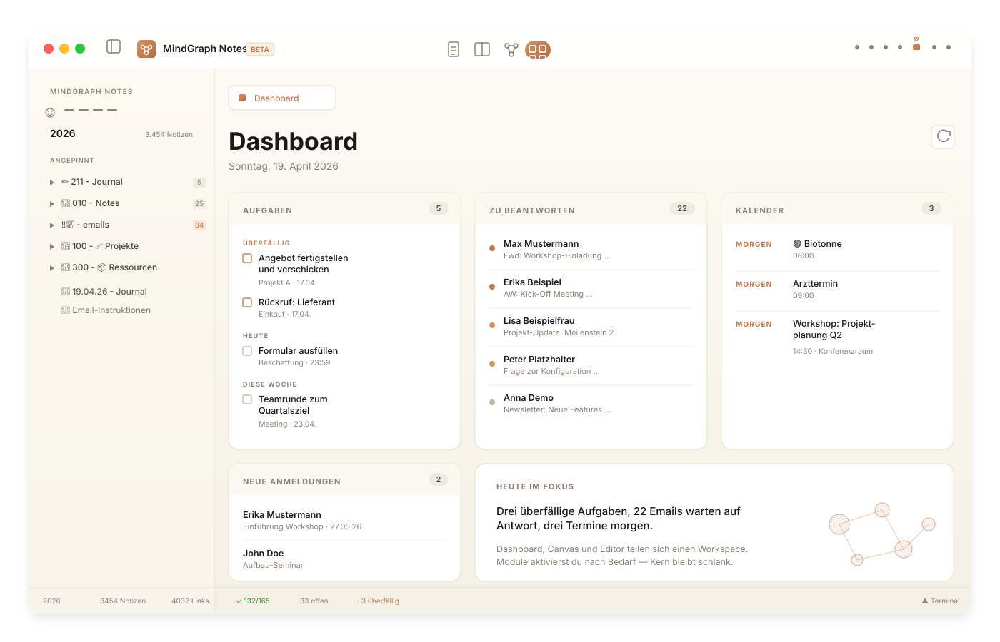

MindGraph Notes wird zum lokalen Arbeitsraum für Wissen, Projekte und operative Notizen: Dashboard, Aufgaben, Emails, Dokumente, Wissensgraph und KI-Module in einer Desktop-App – ohne Cloud-Zwang.

Dashboard, Editor, Aufgaben und Wissensgraph sind immer dabei. Email, Lernen, KI, Geräte und Fachintegrationen schaltest du pro Modul an, wenn du sie brauchst.
Der Tab, den du morgens öffnest. Überfällige Aufgaben, Emails die Antwort erwarten, heutige Termine, neue Anmeldungen – und 🔴-Probleme, deren Aktualität eine lokale KI laufend bewertet, damit vergessene Notizen wieder ins Sichtfeld kommen.
Markdown, Projektnotizen, Wikilinks, Backlinks, Canvas-Ansicht, Dataview-Abfragen und 28+ Slash Commands. Obsidian-Vaults öffnen 1:1 – ohne Migration.
IMAP + SMTP. Lokales Ollama bewertet Relevanz, erkennt Termine, prüft Kalender-Konflikte, generiert Antwort-Entwürfe – alles ohne Cloud-Analyse. Optional aktivierbar.
Dein Vault, deine Tasks, dein Kalender – unterwegs per Telegram abfragen. Bot läuft lokal in MindGraph, Daten verlassen den Rechner nicht. Ollama oder Anthropic als LLM-Backend, frei wählbar.
Karteikarten mit Spaced Repetition (SM-2), KI-Quiz-Generierung direkt aus deinen Notizen, Anki-Import, Lernstreak und Aktivitäts-Heatmap.
Notes-Chat, Smart Connections, LanguageTool, Vision OCR und Whisper-Diktat – alles gegen Ollama oder LM Studio auf deinem Rechner. Diktieren läuft offline im Browser, ohne Installation. Terminal mit OpenCode oder Claude Code integriert.
Zotero, Semantic Scholar, Readwise, reMarkable USB, WordPress-Publishing, edoobox-Agent für Veranstaltungsmanagement. Jede Integration ein Toggle.
Standardmäßig lokal. Optionaler E2E-verschlüsselter Sync (AES-256-GCM, Zero-Knowledge). Keine Telemetrie. DOMPurify-Sanitization und gehärteter Prompt-Injection-Schutz im KI-Modul.
MindGraph ist für Teams und Power-User, die Wissen, Emails, Aufgaben, Dokumente und KI nicht in zehn Tools verteilen wollen. Kein Plugin-Store – Module schaltest du in den Einstellungen an.
Klassische Notiz-Apps zeigen dir eine leere Seite. MindGraph zeigt dir was heute wichtig ist: überfällige Tasks, Emails mit Antwort-Pflicht, heutige Termine — und 🔴-Probleme, deren Relevanz eine lokale KI laufend bewertet, damit nichts in Vergessenheit gerät.
Relevante Mails werden automatisch zu Markdown-Notizen mit Tasks und Wikilinks — direkt in deinem Vault. Kein Copy&Paste aus Thunderbird. Alles lokal, kein Cloud-Leak.
Ollama oder LM Studio auf deinem Rechner. Kein OpenAI-Key, kein Datenabfluss. Notes-Chat, Email-Analyse, Smart Connections, Grammatikprüfung — alles auf deiner Hardware.
Dein bestehender Vault öffnet 1:1: Markdown, Wikilinks, Tags, Frontmatter, Canvas, Dataview. Wenn MindGraph nicht passt, nimmst du deine Daten ohne Migration mit.
Kostenlos, Open Source, in 2 Minuten startklar. Oeffne einen bestehenden Vault oder starte mit dem Starter-Vault.
Nein. Alles läuft lokal. Deine Notizen sind Markdown-Dateien auf deinem Rechner. Der optionale Sync braucht nur eine Passphrase.
Ja. Markdown-Dateien, Wikilinks, Tags, Frontmatter, Dataview und Canvas werden direkt unterstützt. Obsidian-Plugins selbst laufen nicht – die Kernfunktionen der häufigsten Plugins sind aber fest eingebaut (LanguageTool, Smart Connections, Flashcards, Dataview, Tasks).
Nein. Editor, Wissensgraph, Dashboard, Aufgaben und Sync funktionieren komplett ohne KI. Ollama oder LM Studio sind optional für Module wie Email-Analyse, Notes-Chat und Smart Connections.
Obsidian ist ein Markdown-Editor, der via Plugins erweitert wird. MindGraph ist ein integriertes System: Dashboard, Email-Client, KI, Flashcards, Sync und Wissensgraph sind vom Kern vorgesehen. Du aktivierst pro Modul, was du brauchst – ohne Plugin-Store.
Auf deinem Rechner. Keine Cloud, keine Telemetrie, keine Tracker. Der optionale Sync ist Ende-zu-Ende verschlüsselt (AES-256-GCM, scrypt-Key-Derivation) – der Server sieht nur verschlüsselte Daten, die Passphrase verlässt nie dein Gerät.
Sie wird täglich produktiv genutzt – Vaults mit 3000+ Notizen laufen stabil. Das Beta-Label bedeutet: neue Features kommen regelmäßig, das Datenformat (Markdown) ist aber stabil und offen. Kein Risiko eines Lock-in.
Ja. Open Source unter AGPL-3.0. Keine versteckten Kosten, keine Abo-Modelle. Wenn du den Sync-Server selbst hosten willst: auch dessen Code liegt offen.